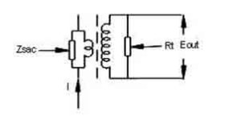

A current transformer (CT) is used for measurement of alternating electric currents. Current transformers, together with voltage transformers (VT) (potential transformers (PT)), are known as instrument transformers. When current in a circuit is too high to directly apply to measuring instruments, a current transformer produces a reduced current accurately proportional to the current in the circuit, which can be conveniently connected to measuring and recording instruments. A current transformer also isolates the measuring instruments from what may be very high voltage in the monitored circuit. In operation the C.T. will induce current in its secondary winding and burden which serves to completely oppose the magnetising effect of the primary current, except for that small proportion required to magnetise the core. This core magnetising component will then be the only source of error if the secondary current is to be used as a measure of the primary current.

This standard design uses an accurate and specific resistive termination on the secondary. By transformer action, the loading effect of this resistance is transferred to the primary and appears as a hunt resistance across the primary. The parallel combination of this shunt resistance and the impedance of the primary winding form the impedance through which the current flows.
It is used for :
- Commonly used in current measuring applications.
- Revenue metering for utility companies.
- Monitoring the operation of a power grid.
- Where there is a need to provide isolation between metering and protection circuits.
- Requirements for safe measurement of large currents, often in the presence of high voltages.
 by
by